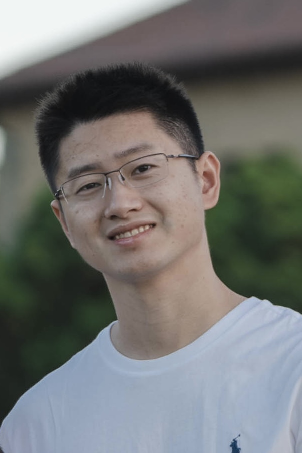

I'm a senior research engineer at AWS, working on LLM customization and inference optimization.
Previously, I worked at Waymo as a senior ML engineer during 2019-2024. My projects focused on using machine learning to do behavior prediction and motion planning.
Before that, I worked at Google Search Knowledge Graph team, focusing on natural language understanding.
I received my M.S. in Electrical Engineering from Stanford University. Prior to that, I obtained my B.S. in Physics from Peking University.
During 2016-2017, I was TA for CS224n: Natural Language Processing with Deep Learning.